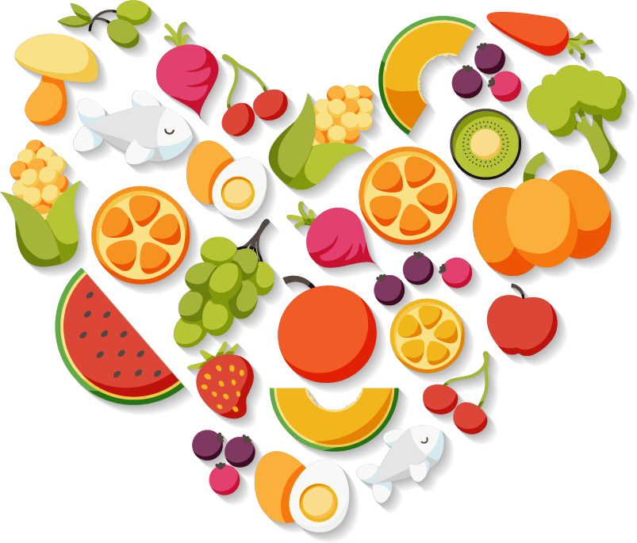

Sobre mim
Formada em Nutrição pela universidade Paulista (UNIP) na cidade de Assis, desde 2022,
além da formação técnica pela ETEC de Ipaussu, desde 2018, venho sempre me aprimorando e buscando conhecimento
para atender da melhor forma meus clientes, deixando-os confortáveis nas suas jornadas quando procuram melhorar
sua qualidade de vida e alimentação saudável, seja qual for o seu objetivo eu estarei de mãos dadas com você até
que os alcance.
Minha missão é: "Proporcionar auto-estima e qualidade de vida aos meus clientes"..
Onde me encontrar
Meu consultório está localizado na cidade de Chavantes - SP
Benefícios
- Atendimento 24h aos clientes de forma online
- Proporcionar melhor qualidade de vida e alimentação saudável
- Planos personalizados adequados aos seus objetivos e respeitando suas restrições
- Melhora da auto-estima